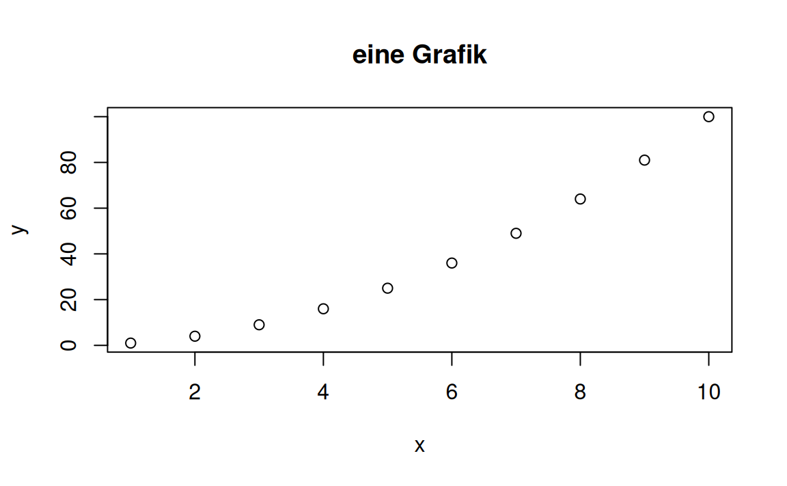

::: {layout-ncol=2}
Text in Spalte 1
Text in Spalte 2
:::
Bausteine Computergestützter Datenanalyse
Leitfaden zur Erstellung von Bausteinen
Lizenzangabe mit maschinenlesbaren Icon nach TULLU(BA)-Regel + Jahr: Titel, Urhebende, Lizenz, Link zur Lizenz. Ursprungsort. (Bearbeitung). (Ausnahmen). Jahr

Bausteine Computergestützter Datenanalyse. Leitfaden zur Erstellung von Bausteinen von Lukas Arnold, Simone Arnold, Florian Bagemihl, Matthias Baitsch, Marc Fehr, Maik Poetzsch und Sebastian Seipel ist lizensiert unter CC BY 4.0. Das Werk ist abrufbar auf GitHub. Ausgenommen von der Lizenz sind alle Logos Dritter und anders gekennzeichneten Inhalte. 2024
Zitiervorschlag
Arnold, Lukas, Simone Arnold, Matthias Baitsch, Marc Fehr, Maik Poetzsch, und Sebastian Seipel. 2024. „Bausteine Computergestützter Datenanalyse. Leitfaden zur Erstellung von Bausteinen“. https://github.com/bausteine-der-datenanalyse/bcd-styleguide.
BibTeX-Vorlage
@misc{BCD-Styleguide-2024,
title={Bausteine Computergestützter Datenanalyse. Leitfaden zur Erstellung von Bausteinen},
author={Arnold, Lukas and Arnold, Simone and Baitsch, Matthias and Fehr, Marc and Poetzsch, Maik and Seipel, Sebastian},
year={2024},
url={https://github.com/bausteine-der-datenanalyse/bcd-styleguide}} 1 Einleitung
Die Bausteine Computergestützter Datenanalyse wurden mit Quarto erstellt. Quarto ist ein quelloffenes Publikationssystem, das die Programmiersprachen Python, R, Julia und Observable sowie verschiedene Publikationsformate wie HTML, PDF, MS Word oder ePub unterstützt. Dieses Dokument ist ein Leitfaden und Gestaltungsrichtlinie zur Bearbeitung und Neuerstellung von Bausteinen.
Nach einer kurzen Einführung zur Installation (Kapitel 2) und allgemeinen Nutzung von Quarto (Kapitel 3) wird die Verwendung von Elementen wie Grafiken und Code-Blöcken in Kapitel 4 erläutert. Stilistische Hinweise sind dabei kursiv gesetzt.
2 Installation
Um Bausteine zu bearbeiten oder eigene Bausteine im Stil von BCD zu erstellen, benötigen Sie:
- eine lokale Installation von Quarto,
- eine Entwicklungsumgebung (VS Code, Jupyter, RStudio, Neovim, Text Editor) mit der jeweiligen Quarto-Erweiterung,
- eine Installation der Programmiersprachen Python und / oder R sowie
- die für die jeweilige Programmiersprache verwendeten Pakete.
Siehe: Quarto Get Started
3 Quarto Markdown Dateien
Quarto Markdown Dateien bestehen aus zwei Teilen: Dem YAML-Header und dem in Quarto Markdown geschriebenen Inhalt.
3.1 YAML-Header
YAML (“YAML Ain’t Markup Language”) ist eine Sprache zum Schreiben von Konfigurationsdateien. Der YAML-Header steht am Beginn einer Quarto Markdown Datei. Der YAML-Header enthält die Metadaten eines Dokuments, steuert die technische Ausführung der Dokumentenerstellung und konfiguriert global das Verhalten und Erscheinungsbild von Grafiken, Programmcode und anderen Elementen. Der YAML-Header wird mit --- begonnen und beendet, Kommentare können mit einer # gesetzt werden.
Metadaten
---
# Metadaten / meta data
title: "Bausteine Computergestützter Datenanalyse"
subtitle: "Leitfaden zur Erstellung von Bausteinen"
author:
- Lukas Arnold
- Simone Arnold
- Florian Bagemihl
- Matthias Baitsch
- Marc Fehr
- Maik Poetzsch
- Sebastian Seipel
---Konfiguration
Für die Dokumentenerstellung können an unterschiedliche Formate angepasste Einstellungen vorgenommen werden. Auf die korrekte Einrückung zusammenhängender Blöcke ist zu achten.
format:
html: # 2 Leerzeichen oder 1 Tab
option: parameter # 4 Leerzeichen oder 2 Tabs
option: parameter
pdf:
option: parameter
option: parameterSpracheinstellungen
lang: de setzt die Dokumentensprache auf Deutsch. Die Standardeinstellung ist Englisch: lang: en. Weitere Einstellungen können mit der Option language auch für mehrere Sprachen konfiguriert werden. Eine Liste der Optionen findet sich auf GitHub.
language:
de:
toc-title: Inhalt # Titel des Inhaltsverzeichnisses
en:
toc-title: Contents # title for table of contents
Hinweis 1: Spracheinstellungen
crossref:
fig-title: Abbildung
fig-prefix: Abbildung
tbl-title: Tabelle
tbl-prefix: Tabelle
sec-prefix: AbschnittQuellenverwaltung und Zitation
Die Quellen werden über eine Bibliografiedatei im Format BibLaTeX (.bib) verwaltet. Diese Datei wird im Arbeitsordner angelegt und im YAML-Header mit ‘bibliography: bibliography.bib’ eingebunden.
- Bibliografiedatei
- bibliography.bib
In der Bibliografiedatei werden Einträge wie folgt abgelegt:
# Printmedien
@book{Hemingway1952,
title={The Old Man and the Sea},
author={Hemingway, Ernest},
year={1952},
publisher={Charles Scribner's Sons},
URL={https://www.testurl.com/testurl},
urldate ={2000-12-31}
}
# Onlineressourcen
@online{Quarto-get-started,
author = {Quarto},
title = {Get Started},
year = {},
url = {https://quarto.org/docs/get-started/},
urldate = {2024-02-27}
}
# mehrere Autor:innen
@online{R-Markdown-Cookbook,
author = {Xie, Yihui and Dervieux, Christophe and Rieder, Emily},
title = {R Markdown Cookbook},
year = {2024},
url = {https://bookdown.org/yihui/rmarkdown-cookbook/},
urldate = {2024-03-04}
}Quarto nutzt Pandoc zur Formatierung von Zitaten und Quellennachweisen. Pandoc nutzt standardmäßig den Chicago-Stil, das Nachweise im Nummern- und im Autor-Jahr-System definiert. In den Bausteinen werden Quellen im Autor-Jahr-System CMOS nachgewiesen.
- Zitierstil
-
Autor-Jahr-System
biblio-style: authoryearCMOS Kurzanleitung -
@Hemingway1952Hemingway (1952) -
[@Hemingway1952](Hemingway 1952) -
[@Hemingway1952, 53](Hemingway 1952, 53)
Hinweis 2: Quellennachweise
Das Erscheinungsbild des Quellenverzeichnisses unterscheidet sich in HTML und PDF leicht.
Ergänzen: bausteinübergreifende Quellenverwaltung.
Marc: Wenn man ein Quarto Projekt anlegt, kann man global den Pfad setzen.
3.2 Quarto Markdown
Quarto Markdown ist eine Erweiterung von Markdown, einer maschinenlesbaren Auszeichnungssprache für die Formatierung von Texten und weiteren Elementen wie Grafiken oder Programmcode. Eine Übersicht über die von Quarto Markdown unterstützten Formate bieten die Quarto Hilfeseiten. Quarto Markdown basiert auf Pandoc. Das Pandoc Handbuch kann bei spezifischen Fragen oder Problemen weiterhelfen.
Elementspezifische Optionen
Das Verhalten und Erscheinungsbild einzelner Elemente kann abweichend von den globalen Einstellungen durch elementspezifische Optionen kontrolliert werden. Abhängig vom jeweiligen Element werden Optionen mit einer bestimmten Syntax übergeben:
Codezellen werden durch führende Kommentarzeilen parametrisiert. (Anders als in R Markdown sollen Zelloptionen nicht in der geschweiften Klammer übergeben werden.)
In Python, R und Julia mit
#| option: parameterIn Observable JavaScript mit
//| option: parameter
Objekte wie Überschriften, Callout Blocks, Divs, Grafiken und Tabellen werden mit geschweiften Klammern gesteuert
{option="parameter"}
Die Konfigurationsmöglichkeiten werden in Kapitel 4 erläutert.
Divs
Divs bieten vielfältige Möglichkeiten, Abschnitte zu formatieren. Divs werden mit mindestens drei Doppelpunkten ::: eingeleitet und beendet (vier und mehr Doppelpunkte helfen bei verschachtelten Divs, den Üblick zu behalten). Optionen werden in geschweiften Klammern übergeben. Die folgende Div …
… erzeugt ein zweispaltiges Layout:
Text in Spalte 1
Text in Spalte 2
Siehe: Quarto Divs
Besondere Bedeutung haben Divs für:
das Layout in mehreren Zeilen oder Spalten und die Abstandsformatierung (Ein Beispiel ist der Lizenzhinweis am Anfang des Dokuments). Quarto Figure Panels
Layout von Code-Blöcken in einem Tabset Panel
Conditional Content zur formatabhängigen Einbindung von Inhalten. Quarto Conditional Content
Erweiterte Möglichkeiten für Querverweise. Quarto Cross-Reference Div Syntax
Sonderformate wie Callout Blocks (siehe Kapitel 4).
Programmcode
Quarto Markdown kann Code von verschiedenen Programmiersprachen ausführen: Python, R, Julia und Observable JavaScript. Dazu unterstützt Quarto die Engines Knitr und Jupyter zur dynamischen Berichterstellung. (Quarto Frequently Asked Questions)
Python-Code wird mit Jupyter verarbeitet. Dazu muss eine lokale Installation von Python vorhanden sein. Die Installationsdatei sollte von der Python Homepage bezogen werden.
R-Code wird mit Knitr verarbeitet. Dazu muss eine lokale Installation von R vorhanden sein, in der die Pakete knitr, rmarkdown sowie für die Ausführung von Python-Code das Paket reticulate installiert sind.

Wird in einem Quarto-Dokument sowohl Python- als auch R-Code benutzt, wird die Knitr Engine zur Erstellung des Dokuments verwendet.
Codeblöcke werden mit ``` eingeschlossen und die zu verwendende Progammiersprache in geschweiften Klammern übergeben.
``` {python}
print(“Hello World from Python!”)
```
Hello World from Python!``` {r}
print(“Hello World from R!”)
```
[1] "Hello World from R!"4 Gestaltung von Elementen
4.1 Text
Regulärer Text wird in Markdownsyntax durch Sonderzeichen formatiert. Diese Sonderzeichen können durch ein vorangestellte Backslash \ in der Ausgabe sichtbar gemacht werden.
Stylesheets
Mithilfe von eigenen Stylesheets in Form von .css oder .scss-Dateien lassen sich eine Vielzahl an Layoutoptionen in der HTML-Ausgabe anpassen (W3Schools). Eine simple Einstellung wie
.neuer-begriff {
color: green;
font-weight: bold;
}sorgt dafür, dass einzelne Wörter durch Verwendung von [Beispielwort]{.neuer-begriff} grün eingefärbt werden und fett gedruckt sind: Beispielwort. Dabei werden die Eigenschaften der geschweiften Klammer auf alle Inhalte der eckigen Klammer angewendet. Änderungen in der .css-Datei werden dann global auf alle Elemente angewendet, sodass diese nicht einzeln geändert werden müssen. Die Verwendung einer .css-Datei kann im YAML-Header geregelt werden.
format:
html:
css: cssdatei.cssDamit diese Elemente auch in der PDF-Ausgabe funktionieren können diese Einstellungen analog in LaTeX definiert werden:
\newcommand{\neuerbegriff}{\textcolor{green}}(Anmerkung: Dieses Beispiel ist lediglich grün, aber nicht fett gedruckt.) Auch diese Verwendung wird über den YAML-Header geregelt.
format:
pdf:
include-in-header:
- macros.texFür eine fortgeschrittene Anwendungsmöglichkeit siehe Kapitel 4.2.0.1. Eine kleine Auswahl an Beispielen für Stylesheets anderer Projekte mit unterschiedlichem Grad an Komplexität können hier gefunden werden:
4.2 Callout Blocks
Callout Blocks eignen sich dazu, ausgewählte Inhalte hervorzuheben. Callout Blocks können umfangreich angepasst werden.
:::{.callout-note}
Es gibt fünf Typen von callouts:
`note`, `tip`, `warning`, `caution`, und `important`.
:::
Hinweis
Es gibt fünf Typen von callouts: note, tip, warning, caution, und important.
Tipp
Es gibt fünf Typen von callouts: note, tip, warning, caution, und important.
Warnung
Es gibt fünf Typen von callouts: note, tip, warning, caution, und important.
Vorsicht
Es gibt fünf Typen von callouts: note, tip, warning, caution, und important.
Wichtig
Es gibt fünf Typen von callouts: note, tip, warning, caution, und important.
Auklappbarer Callout Block
{.callout-important collapse="true"} macht den Tipp in HTML aufklappbar, z. B. um Tipps zu Aufgaben zu geben. Wird das Argument collapse=False übergeben, ist der Callout Block zu Beginn aufgeklappt.
Callouts können auch verschachtelt werden
Die erste Überschrift im Markdownformat wird als Titel benutzt, wenn keiner in der geschweiften Klammer mit dem Argument title=Titel spezifiziert wurde.
:::: {.callout-tip}
# Callouts können auch verschachtelt werden
::::
Siehe dazu: Quarto Callout Blocks
Callout Blocks werden mit der Spracheinstellung im YAML-Header lokalisiert.
## Spracheinstellungen / language settings
lang: de
language:
de:
crossref-imp-title: "Definition"
crossref-imp-prefix: "Definition"
crossref-lst-title: "Code-Block"
crossref-lst-prefix: "Code-Block"
crossref-nte-title: "Beispiel"
crossref-nte-prefix: "Beispiel"
crossref-tip-title: "Tipp"
crossref-tip-prefix: "Tipp"
crossref-wrn-title: "Hinweis"
crossref-wrn-prefix: "Hinweis"Damit die Lokalisierung wirksam wird, muss für den Callout Block eine ID vergeben werden. Die ID muss an erster Stelle stehen und besteht aus einer # und einem reservierten Kürzel (siehe Kapitel 4.4).
Wichtig
Callout Block vom Typ important ohne ID.
{.callout-important}
Definition 1
Callout Block vom Typ important mit ID.
{#imp-ID .callout-important}
Definieren von eigenen Callout-Umgebungen
Mit folgendem Vorgehen lassen sich eigene Callout-Umgebungen definieren wobei diese zum jetzigen Stand (April 2024) in der PDF farblich nicht anpassbar sind.
Zu erst wird eine Ordnerstruktur für Quarto-Erweiterungen benötigt:
_extension
- _extension.yml
- callout_definition.lua
- theme.scss
_quarto.yml
mein_dokument.qmdDie _extension.yml listet dabei alle benutzten Filter auf, in diesem Fall callout_definition.lua. Hier lässt sich auch eine .scss Datei unterbringen, in der die Änderungen am Aussehen der HTML gepeichert sind. Diese werden dann in der Datei _quarto.yml mit courseformat-html aufgerufen.
title: Course Page Format
author: Marc Fehr
version: 1.0.0
contributes:
formats:
html:
theme: [default, theme.scss]
filters:
- callout_definition.luaDie Definition des Filters und damit der eigenen Callout-Umgebung sieht folgendermaßen aus:
function Div(div)
-- process exercise
if div.classes:includes("callout-definition") then
-- default title
local title = "Definition"
-- Use first element of div as title if this is a header
if div.content[1] ~= nil and div.content[1].t == "Header" then
title = pandoc.utils.stringify(div.content[1])
div.content:remove(1)
end
-- return a callout instead of the Div
return quarto.Callout({
type = "definition",
content = { pandoc.Div(div) },
title = title,
collapse = false
})
end
endIn der theme.scss wird dann die Darstellung der callout-Umgebung festgelegt. Da es sich hier um eine reine HTML Anpassung handelt, findet sich das Resultat nur in der HTML-Ausgabe und nicht in der PDF. Über die Hexadezimalwerte können dabei die Farben gesteuert werden. In der PDF erscheint ein solcher Callout-Block dann in der Farbe Hellgrau. Im letzten (auskommentierten) Abschnitt lässt sich ein Symbol (beispielsweise ein Ausrufezeichen für eine Warnung-Umgebung) festlegen. Dabei wird auf die Font Awesome-Bibliothek zurückgegriffen.
/*-- Importing fa icons --*/
@import url("https://cdnjs.cloudflare.com/ajax/libs/font-awesome/6.0.0/css/all.min.css");
/*-- scss:rules --*/
// Exercise callout styling
div.callout-definition.callout {
border-left-color: #aea545;
}
div.callout-definition.callout-style-default > .callout-header {
background-color: #474765;
}
/* Hier kann man ein Icon hinzufügen
.callout-definition > .callout-header::before {
font-family: "Font Awesome 5 Free";
content: "\f303";
margin-right: 10px;
}
*/Verwendungsvorschlag Callout Blocks in den Bausteinen
Callout Blocks sollten immer eine ID erhalten (siehe Kapitel 4.4).
Beispiel 1: Beispiel note
callout-note für Beispiele
Querverweis mit #nte-ID
Definition 2: Beispiel important
callout-important für Definitionen - der definierte Begriff wird als Überschrift verwendet. Querverweis mit #imp-ID
Tipp 1: Beispiel tip
callout-tip aufklappbar für Lösungshilfen und Lösungen
Querverweis mit #tip-ID
Hinweis 3: Beispiel warning
callout-warning appearance="simple" für Hinweise
Querverweis mit #wrn-ID
4.3 Tabset Panel
Tabset Panel erlauben die Präsentation von Inhalten in Reitern. Diese werden mit einer Div {.panel-tabset} gesetzt, innerhalb derer neue Reiter durch eine Überschrift hinzugefügt werden ## Python.
print("Hello World from Python!")print("Hello World from R!")Hello World from Python![1] "Hello World from R!"
4.4 Nummerierte Beschriftungen und Querverweise
Um nummerierte Beschriftungen und Querverweise zu setzen, muss das Zielelement mit einer ID versehen werden. Elementen (z. B. Code-Blöcke, Grafiken, Überschriften) wird eine ID in geschweiften Klammern übergeben, die ID muss innerhalb der geschweiften Klammer an erster Stelle stehen und beginnt mit einer #, gefolgt von einem typabhängigen, reservierten Präfix. Anschließend folgt eine beschreibende Zeichenkette, um das Zielelementen von anderen Elementen des gleichen Typs zu unterscheiden. Auf diese Weise werden auch Überschriften querverwiesen.
Hinweis 4: Hinweis reservierte Präfixe
In Quarto sind verschiedene Präfixe für die Erstellung von Querverweisen reserviert: fig, tbl, lst, tip, nte, wrn, imp, cau, thm, lem, cor, prp, cnj, def, exm, exr, sol, rem, eq, sec.
Der Callout Block vom Typ Hinweis im Abschnitt Kapitel 4.2.1 hat die ID #nte-Beispiel. Der Querverweis auf diesen Callout Block lautet @nte-Beispiel: Beispiel 1.
(Siehe dazu: Quarto Cross References)
Grafiken erhalten das Präfix fig. In diesem Beispiel wird eine ID vergeben sowie die Größe der Grafik mit der Option width eingestellt:
{#fig-programmieren width="33%"}
Mit der ID kann ein Querverweis auf die Abbildung gesetzt werden: @fig-programmieren erzeugt den Querverweis Abbildung 1.
4.5 Grafiken
Grafiken können lokal oder aus dem Internet eingebunden werden. Der lokale Dateipfad wird ausgehend vom aktuellen Arbeitsverzeichnis angegeben. Die Syntax lautet:


Hinweis 5: absolute Dateipfade vermeiden
Grafiken können mit einem absoluten Dateipfad (mit führendem /) oder mit einem relativen Dateipfad eingebunden werden.
absolut:
relativ:

Das Einbinden über absolute Dateipfade ist fehleranfällig uns sollte vermieden werden.
- Speicherort Grafiken
- Im Skript verwendete Grafiken werden im Unterordner “skipt/00-bilder” abgelegt.
- Für Aufgabenstellungen verwendete Grafiken werden im Unterordner “aufgaben/00-bilder” abgelegt.
Tipp 2: Arbeitsverzeichnis ermitteln
Das aktuelle Arbeitsverzeichnis kann mit einem Codeblock mit dem entsprechenden Befehl angezeigt werden (hier ohne Ausgabe):
In R:
print(getwd())In Python:
import os
print(os.getcwd())Grafikoptionen
Grafikoptionen können global im YAML-Header definiert werden.
---
cap-location: bottom
fig-align: center
---
Hinweis 6: Grafiken ohne Beschriftung
Eine Grafik ohne Beschriftung oder #fig-ID folgt der globalen Einstellung nicht. Das obenstehende Bild steht in HTML linksbündig, obwohl im YAML-Header fig-align: center konfiguriert ist. Quarto unterscheidet intern zwischen unbeschrifteten Bildern (image) und beschrifteten Grafiken (figure). Siehe https://github.com/quarto-dev/quarto-cli/issues/6509#issuecomment-1677657369.
Grafikoptionen können auch elementweise gesetzt werden. Optionen für einzelne Grafiken werden in geschweiften Klammern übergeben und mehrere Optionen durch Leerzeichen voneinander getrennt. Im folgenden Beispiel wird eine #fig-ID vergeben, ein Alternativtext mit fig-alt="" angelegt, die Ausrichtung mit fig-align="" linksbündig sowie die Größe der Grafik mit width="" eingestellt. width stellt die Breite der Grafik ein, die Höhe wird automatisch berechnet.
{#fig-Grafik-mit-Optionen fig-alt="Eine Person programmiert am Computer" fig-align="left" width="33%"}
- Grafiken
-
Globale Einstellungen zentriert
fig-align: center -
Beschriftung unterhalb
cap-location: bottom -
Einbindung mit
#fig-IDund Alternativtextfig-alt="Alternativtext"(ausgenommen dekorative Grafiken)
Dekorative Grafiken werden ohne fig-ID eingebunden und erhalten ein Leerzeichen als Titel: [ ](skript/00-bilder/Dateipfad). Nicht gemeinfreie Grafiken erhalten einen Lizenzhinweis nach der TULLU(BA)-Regel in einer umrahmten Div ::: {.border}.
Toast Dining Eating von OpenClipart-Vectors ist lizensiert unter Pixabay Content License. Das Werk ist abrufbar auf Pixabay. 2013
Nutzung von Vektorgrafiken
Die Bausteine sind für den Export in HTML und PDF konzipiert. Der Export von Grafiken nach PDF erfolgt über LaTeX und eine PDF-Renderengine. Somit werden nur Formate unterstützt, die in LaTex und in PDF unterstützt werden. Dies betrifft insbesondere
Vektorgrafiken: Um Vektorgrafiken im Format SVG zu verarbeiten, wird die Bibliothek
Librsvgbenötigt. Siehe: Quarto: PDF Format Improvements. Werden SVG-Grafiken mit Dateiendung (titel.svg) eingebunden, wandelt Quarto die Bilder automatisch in das PDF-Format um.GIF: Das PDF-Format unterstützt animierte Bilddateien nicht bzw. nur in bestimmten Kombinationen aus Renderengine und PDF Reader. Quartos Standardengine TinyteX unterstützt animierte Bilddateien nicht.
Das für Grafiken verwendete Format kann global im YAML-Header definiert werden.
format:
html:
default-image-extension: svg
pdf:
cite-method: biblatex
default-image-extension: pdfDann können Grafiken ohne Dateiendung eingebunden werden. Quarto lädt dann automatisch das im YAML-Header definierte Dateiformat. 
Hinweis
Auf GitHub wandelt ein Skript alle SVG-Grafiken automatisch in PDF um.
Flussdiagramme
Quarto unterstützt Graphviz und Mermaid zur Erzeugung von Flussdiagrammen. Wird Mermaid verwendet, sollte im YAML-Header ein alternatives theme konfiguriert werden, da das default theme sehr dunkle subgraphs erzeugt:
mermaid:
theme: neutral
4.6 Videos und H5P-Elemente
- Speicherort von Videos
- Unterordner im Arbeitsverzeichnis “videos”
Die Syntax zur Einbindung von Videos lautet:
# Allgemein
{{< video Dateipfad >}}
# Beispiel
{{< video https://www.youtube.com/watch?v=EImihZVE0sA >}}
Open Educational Resources concept: What is an OER? von UNESCO ist lizensiert unter CC-BY. Das Werk ist abrufbar auf YouTube.
H5P-Elemente
H5P-Elemente können exportiert als all-in-one HTML file eingebunden werden. Die Syntax lautet:
{=html}
{{< include Beispiel.html >}}4.7 Programmcode
Code wird mit folgender Syntax eingebunden:
```{python}
print("Hallo Welt")
```Hallo WeltDabei können verschiedene Flags gesetzt werden. Diese Flags können entweder lokal in der Programmierumgebung oder aber global in der yml-Datei gesetzt werden.
Mit #| echo: false (standartmäßig true) kann die Darstellung des Codes unterdrückt werden.
``` {python}
#| echo: false
print(“Hallo Welt”)
```
Im erzeugten Dokument wird dann nur die Ausgabe des Codes dargestellt (die folgende Codezelle wird nicht dargestellt):
Hallo WeltIm Gegensatz dazu bestimmt #| output: false (standartmäßig true), dass der Code ohne Ausgabe dargestellt werden soll.
```{python}
#| output: false
print("Hallo Welt")
```Mit #| output: asis wird der Code ohne umschließende Codezellen-Formatierung dargestellt:
print("Hallo Welt")Hallo Welt
Für die Code-Ausführung mit knitr (R-Code, Python-Code via reticulate) bewirkt das Flag #| results: hold eine zusammenhängende Codeausführung.
# 2 Ausgaben mit Python
print("Ausgabe 1")Ausgabe 1print("Ausgabe 2")Ausgabe 2# 2 Ausgaben mit Python und gesetztem Flag results: hold
print("Ausgabe 1")
print("Ausgabe 2")Ausgabe 1
Ausgabe 2# 2 Ausgaben mit R
print("Ausgabe 1")[1] "Ausgabe 1"print("Ausgabe 2")[1] "Ausgabe 2"# 2 Ausgaben mit R und gesetztem Flag results: hold
print("Ausgabe 1")
print("Ausgabe 2")[1] "Ausgabe 1"
[1] "Ausgabe 2"Quarto bietet darüber hinaus weitere Konfigurationsmöglichkeiten für die Präsentation von Programmcode (siehe Dokumentation).
Code kopieren
Im YAML-Header wird per Option die Kopierfläche für Programmcode aktiviert. (Standard ist das Sichtbarwerden beim Herüberfahren mit der Maus, code-copy: hover.)
format:
html:
code-copy: true # hover is defaultOptionen für programmierte Grafiken
Die in den Bausteinen verwendeten Optionen zur Gestaltung programmierter Grafiken sind im folgenden Block kurz erläutert.
#| fig-cap: "Beschriftung"
#| label: fig-ID "ID für Querverweise"
#| fig-alt: "Alternativtext"
#| fig-width: "Breite der Grafik als lokale Einstellung, in der Priorität über globaler Einstellung im YAML-Header"
#| fig-height: "Höhe der Grafik als lokale Einstellung, in der Priorität über globaler Einstellung im YAML-Header"
#| fig-asp: "Seitenverhältnis der Grafik als lokale Einstellung, in der Priorität über globaler Einstellung im YAML-Header"5 Aufbau der Bausteine
Die Bausteine sind modular aufgebaut und bestehen aus drei Typen: Werkzeugbausteinen, Methodenbausteinen und Anwendungsbausteinen.
Werkzeugbausteine vermitteln den Umgang mit den Programmierumgebungen Python und R, die Entwicklung von Pseudocode und die rechtlichen Grundlagen des Datenmanagements.
Methodenbausteine vermitteln allgemeine methodische Grundlagen für die Datenanalyse wie die Analyse von Geodaten und Zeitreihen, Statistik, numerische Verfahren oder Datenfitting.
Anwendungsbausteine vermitteln fachspezifische Inhalte wie die Auswertung von Sensordaten, Stadt- und Verkehrsplanung, Branddatenanalyse.
Neben den fachlichen Inhalten umfassen Methoden- und Anwendungsbausteine Codebeispiele für Python bzw. für R, die Studierenden die Bearbeitung von Übungsaufgaben und Projekten in der jeweiligen Programmierumgebung erlauben.
Die Bausteine folgen einem einheitlichen Aufbau:
Voraussetzungen (eingebundene seperate Markdown-Datei)
Inhaltliche Voraussetzungen
vorher zu bearbeitende Bausteine
verwendete Pakete und Datensätze / -quellen
geschätzte Bearbeitungszeit
Lernziele: Wissen, Kompetenzen, Leitfragen(eingebundene seperate Markdown-Datei.)
Inhalt (gerne abwechslungsreich gestalten)
Theorie
Beispiele
Übungen
Das Wichtigste (vielleicht als Video)
Lernzielkontrolle
Kompetenzquiz (ggf. aufklappbarer Callout Block, Textverweis für PDF, polierte Lösungen evntl. via Lumi später entscheiden)
Übungsaufgaben (kleine Projekte)
Prüfungsaufgaben (ohne Lösungen)
5.1 Ordnerstruktur
Die Ordnerstruktur für die Bausteine ist auf GitHub dokumentiert.
5.2 Sprache
Die Ansprache der Leser:innen erfolgt in der Höflichkeitsform “Sie / Ihr”. Gegendert wird mit dem Doppelpunkt: Er:Sie ist Busfahrer:in. Es werden nur Personen gegendert. Nicht gegendert wird zum Beispiel: “die Anbieter von Plagiatserkennungssoftware”. Die Anbieter sind Unternehmen.
Eine Alternative zum Gendern mit Doppelpunkt ist die Verlaufsform, z. B. “Studierende”.
5.3 Barrierefreiheit
Siehe Checklisten Barrierefreiheit Checklisten: Barrierefreiheit in der digitalen Lehre. Hochschuldidaktik im digitalen Zeitalter.nrw; Kompetenzzentrum digitale Barrierefreiheit.nrw. CC BY 4.0.
Quellenverzeichnis
Hemingway, Ernest. 1952. The Old Man and the Sea. Charles Scribner’s Sons. http://www.testurl.com.
W3Schools. „CSS Text“. https://www.w3schools.com/css/css_text.asp.